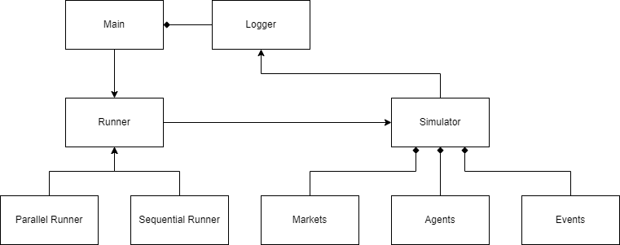

Platform¶
Class architecture¶
The following code is typical lines in main file:
runner = SequentialRunner(
settings=setting_dict_or_json,
prng=random.Random(seed),
logger=MarketStepPrintLogger(),
)
runner.main()
As this code representing, the simulation is fully controlled by a runner, in this case, SequentialRunner .
Runner usually accepts setting dictionary, a pseudo random number generator, and a logger.
The following figure shows the class architecture.


Main usually has a logger and generating runner. As a runner, Parallel Runner or Sequential Runner is available. Runner will generate simulator and some other components such as markets, agents, and events. Then, runner control all the components and simulator for it rule. On the other hand, simulator provide API interface for runners to define the procedure controlling simulation. Moreover, simulator and its components generate logs and push it to logger.
The key concept of this platform is that runner is replaceable to realize more complex simulator controlling.
Parallel runners¶
pams.runners.MultiThreadAgentParallelRunner and pams.runners.MultiProcessAgentParallelRunner are experimental runners
that parallelize the order submissions of normal (non high-frequency) agents in each step.
They are drop-in replacements of pams.runners.SequentialRunner, and the simulation results are the same as
pams.runners.SequentialRunner with the same settings and the same seed.
The number of workers can be set by simulation.numParallel in the config, but the number of agents that can be
parallelized in each step is limited by maxNormalOrders of the session.
runner = MultiThreadAgentParallelRunner(
settings=setting_dict_or_json,
prng=random.Random(seed),
logger=MarketStepPrintLogger(),
)
runner.main()
Because of the GIL of python, pams.runners.MultiThreadAgentParallelRunner is beneficial only when
the order submission of agents waits for I/O (e.g., external models or services).
pams.runners.MultiProcessAgentParallelRunner copies the whole simulation to the worker processes in every step,
so it is much slower and the user-defined classes must be picklable and importable from the worker processes.
How it starts the worker processes (spawn, fork or forkserver) can be set by simulation.startMethod
in the config. See Parallel runners for the details and the cost of the copies.
Customizing the workers¶
Subclasses of the parallel runners can customize the workers by overriding the following members.
default_start_method(class attribute, process runner only): the start method used whensimulation.startMethodis not set. The default,None, means the platform’s default. The start method in use is stored instart_method._get_mp_context()(process runner only): themultiprocessingcontext of the worker processes. The default ismultiprocessing.get_context(self.start_method)._get_worker_initializer()and_get_worker_initargs(): a function called once on each worker (thread or process) before it runs any task, and its arguments. By default, nothing is called. With the process runner, the function must be defined at the top level of a module that the worker processes can import, and the arguments must be picklable. If the function raises any exception on a worker, including aBaseExceptionsuch asSystemExit, the tasks on that worker raise aRuntimeErrorcaused by the exception, and the simulation fails. With the process runner, the__cause__of theRuntimeErroris the worker’s traceback text, not the exception._create_executor(): theconcurrent.futures.Executorthat runs the tasks. The default creates_parallel_pool_provider(concurrent.futures.ThreadPoolExecutororconcurrent.futures.ProcessPoolExecutor) with the members above andnumParallelworkers._split_agents_into_chunks(agents): how the agents asked at the same time are split into tasks. The agents of a task are asked one by one on the same worker. The thread runner makes one task per agent, and the process runner makes at mostnumParalleltasks of consecutive agents because each task copies the whole simulation. The tasks must keep all the agents in the given order, so that the results stay the same aspams.runners.SequentialRunner; otherwise, the simulation fails with aValueError.
For example, the following runner starts its worker processes by spawn and loads a model once in each worker
process. The agents use my_runner.MODEL in submit_orders instead of keeping the model as their attribute,
so that the model is not copied in every task.
# my_runner.py, which the worker processes can import
from typing import Any, Callable, Optional, Tuple
from pams.runners import MultiProcessAgentParallelRunner
MODEL = None
def load_model(path: str) -> None:
global MODEL
MODEL = ... # load the model from path
class MyRunner(MultiProcessAgentParallelRunner):
default_start_method = "spawn"
def _get_worker_initializer(self) -> Optional[Callable[..., Any]]:
return load_model
def _get_worker_initargs(self) -> Tuple[Any, ...]:
return ("model.bin",)
JAX/Flax runner¶
pams.runners.JaxAgentParallelRunner is an experimental pams.runners.MultiProcessAgentParallelRunner
for agents whose submit_orders uses JAX, e.g., neural network models of
Flax. JAX is not a dependency of pams, so install it separately, e.g.,
pip install pams jax flax (see the JAX installation guide
for GPUs). Include pams in the command even if it is already installed, so that pip chooses versions of JAX and
Flax that work with the NumPy that pams requires. For example, pams requires NumPy 1.x on Python 3.12 or earlier,
and the last versions of JAX and Flax that support it are 0.7.1 and 0.12.0. import pams does not import JAX,
and creating the runner without JAX raises an ImportError.
The worker processes are started by
spawnby default (default_start_method = "spawn"), becauseforkis unsafe once JAX runs its own threads: a forked worker process can deadlock on a lock held by one of them.Each worker process configures JAX once before it runs any task, by
simulation.jaxPlatforms,simulation.jaxPreallocateandsimulation.jaxMemoryFraction(see JAX/Flax runner), and then calls the worker initializer given by_get_worker_initializer(), e.g.,load_modelabove. The preallocation of GPU memory is disabled by default, so that the worker processes can share a GPU. The main process is not configured, so setXLA_PYTHON_CLIENT_PREALLOCATE=falsein the environment too if the agents use JAX on a GPU when they are created on the main process.The worker processes persist during the simulation, so a function compiled by
jax.jit()is compiled once per worker process at its first call and reused in the following steps. Compiled functions cannot be pickled: define them at the top level of a module instead of keeping them as attributes of the agents.The jax arrays, Flax modules and parameters that the agents hold are pickled in every task (see Parallel runners) and copied to the default device of the worker process. Load large or read-only models once per worker process with the worker initializer instead.
Do not run JAX (e.g., create jax arrays) at the top level of the modules that the worker processes import, such as the main script, and do not pass jax arrays to the worker initializer; otherwise, JAX is initialized before it is configured.
Derive the random numbers, including the keys of
jax.random, fromagent.prng, so that the results are the same aspams.runners.SequentialRunner.
# my_agent.py, which the worker processes can import
import flax.linen as nn
import jax
import jax.numpy as jnp
from pams.agents import Agent
class Model(nn.Module):
@nn.compact
def __call__(self, x):
return nn.Dense(1)(x)
@jax.jit
def predict(params, x): # compiled once per worker process
return Model().apply(params, x)
class MyFlaxAgent(Agent):
def setup(self, settings, accessible_markets_ids, *args, **kwargs):
super().setup(settings, accessible_markets_ids, *args, **kwargs)
key = jax.random.PRNGKey(self.prng.randrange(2**31))
self.params = Model().init(key, jnp.zeros((3,))) # pickled in every task
def submit_orders(self, markets):
... # e.g., predict(self.params, features)
# main.py
import random
from my_agent import MyFlaxAgent
from pams.runners import JaxAgentParallelRunner
if __name__ == "__main__":
runner = JaxAgentParallelRunner(settings=config, prng=random.Random(42))
runner.class_register(MyFlaxAgent)
runner.main()
TensorFlow runner¶
pams.runners.TensorFlowAgentParallelRunner is an experimental
pams.runners.MultiProcessAgentParallelRunner for agents whose submit_orders uses
TensorFlow, e.g., Keras models. TensorFlow is not a dependency of pams, so install
it separately, e.g., pip install tensorflow (or pip install tensorflow-cpu for the CPU-only build).
import pams does not import TensorFlow, and creating the runner without TensorFlow raises an ImportError.
The worker processes are started by
spawnby default (default_start_method = "spawn"), because TensorFlow is not fork-safe. Once TensorFlow has run on the main process, e.g., to build the models of the agents or in an earlierpams.runners.SequentialRunner, a worker process started byforkhas a copy of its memory but not its threads: TensorFlow operations can hang there, GPUs cannot be used, and TensorFlow cannot be configured.Each worker process configures TensorFlow once before it runs any task, by
simulation.tensorflowIntraOpThreads,simulation.tensorflowInterOpThreadsandsimulation.tensorflowGpuMemoryGrowth(see TensorFlow runner), and then calls the worker initializer given by_get_worker_initializer(), e.g.,load_modelabove. By default, the CPUs are divided among the worker processes running at the same time, and the memory growth of the GPUs is enabled so that the worker processes can share a GPU. The main process is not configured. To give each worker process its own GPU, calltf.config.set_visible_devicesin the initializer;CUDA_VISIBLE_DEVICESset there has no effect by default, because the GPUs are already listed to enable their memory growth.The agents are pickled in every task (see Parallel runners).
tf.Tensorandtf.Variableare pickled as copies of their values, a Keras 3 model is pickled by saving it in the.kerasformat, which takes tens of milliseconds even for a small model, and a function made bytf.functioncannot be pickled. Therefore, keep a key of the model, such as its path, in the agent, and get the model from a cache at the top level of a module as below, so that each worker process loads it once and reuses it in the following steps.Importing TensorFlow at the top level of a module is fine, but do not run TensorFlow (e.g., create tensors or models) at the top level of the modules that the worker processes import, such as the main script; otherwise, TensorFlow is initialized before it is configured, and the simulation fails.
Derive the random numbers, e.g., the seeds of
tf.random.stateless_normal, fromagent.prng, so that the results are the same aspams.runners.SequentialRunner. The random states of TensorFlow on the worker processes are not returned to the main process.On CPUs, the results of large operations, such as reductions and matrix multiplications over long axes, depend on the number of intra-op threads, even with
tf.config.experimental.enable_op_determinism(). The default number on the worker processes can differ from the main process, where TensorFlow uses all the CPUs, and it changes withnumParallelandmaxNormalOrders. For results identical topams.runners.SequentialRunner, setsimulation.tensorflowIntraOpThreads, and set the same number bytf.config.threading.set_intra_op_parallelism_threadson the process runningpams.runners.SequentialRunnerbefore TensorFlow runs there.The runner is faster than
pams.runners.SequentialRunneronly if the TensorFlow computations of the agents are much heavier than the copy of the simulation in every task. Starting each worker process, which imports TensorFlow, also takes seconds.
# my_agent.py, which the worker processes can import
import functools
import tensorflow as tf
from pams.agents import Agent
@functools.lru_cache(maxsize=None)
def get_model(path): # loaded once per process
return tf.keras.models.load_model(path)
class MyKerasAgent(Agent):
def setup(self, settings, accessible_markets_ids, *args, **kwargs):
super().setup(settings, accessible_markets_ids, *args, **kwargs)
self.model_path = settings["modelPath"] # only the path is pickled
def submit_orders(self, markets):
model = get_model(self.model_path)
... # e.g., model(features, training=False)
# main.py
import random
from my_agent import MyKerasAgent
from pams.runners import TensorFlowAgentParallelRunner
if __name__ == "__main__":
runner = TensorFlowAgentParallelRunner(
settings=setting_dict_or_json, prng=random.Random(42)
)
runner.class_register(MyKerasAgent)
runner.main()
Agents using PyTorch¶
pams.runners.TorchAgentParallelRunner (experimental) is a subclass of
pams.runners.MultiProcessAgentParallelRunner for agents that use PyTorch in
submit_orders. PyTorch is not a dependency of pams: install it yourself, e.g., by pip install torch (see the
PyTorch website for the builds for your platform and accelerator). pams imports PyTorch only when this runner is
created, and the runner raises an ImportError if PyTorch is not installed. In addition to the process runner, it
starts the worker processes by
spawnunlesssimulation.startMethodis set, becauseforkis unsafe with PyTorch: CUDA cannot be initialized in a forked process, and a process forked while PyTorch runs its thread pools can deadlock. Because ofspawn, the code that runs the runner must be underif __name__ == "__main__":and the user-defined classes must be in an importable.pyfile on every platform, including Linux (see Parallel runners).sets the number of threads of PyTorch on each worker process to
simulation.torchNumThreads(default: the number of threads of PyTorch on the main process divided by the smaller ofnumParalleland the largestmaxNormalOrdersof the sessions, at least 1), so that the workers do not oversubscribe the CPUs. For small models, 1 is often the fastest.sets the sharing strategy of
torch.multiprocessingtofile_systemon the main process, which affects the whole process, and on the worker processes. A subclass can keep the current strategy by setting its class attributetorch_sharing_strategytoNone.
Tensors held by agents, such as the parameters of their models, are sent to the worker processes through shared memory: they are moved to shared memory in the first task, and later tasks send a handle of a few hundred bytes per tensor instead of its data. Keep the following in mind.
Each task still refers to every tensor of every agent, and opening them takes time, so the cost of a task grows with the number of tensors, e.g., tens of milliseconds for 50 agents with a model of 6 tensors each. The runner is faster than
pams.runners.SequentialRunneronly whensubmit_orderstakes much longer than that, so measure it with your agents.On Linux, the shared memory is in
/dev/shm, which must be large enough for the tensors of all the agents. Docker gives 64 MB by default, which can be raised by--shm-size.The worker processes see the same memory as the main process, so in-place changes of the tensors in
submit_orders, e.g., by training, change the tensors on the main process, while the other changes of the agents on the worker processes are lost. Keep the tensors read-only insubmit_orders.Only the state of the
prngof each agent comes back from the worker processes. Draw the random numbers of PyTorch from a generator seeded by it, e.g.,torch.Generator().manual_seed(self.prng.randrange(2**32)), instead of the global generator of PyTorch.The results of some operations of PyTorch, e.g., matrix products, can differ in rounding with the number of threads and with the device, and such a difference can change the course of the simulation. To compare the results with
pams.runners.SequentialRunner, run it aftertorch.set_num_threads(n)and settorchNumThreadston.
The runner does not choose the device. The worker processes see the same devices as the main process, and each worker
process using CUDA creates its own CUDA context, which takes hundreds of megabytes of the GPU memory. Keep the tensors
held by agents on the CPU, because CUDA tensors would be sent by CUDA IPC, which Windows does not support. Moving them
to the device in submit_orders copies them in every task, because each task gets new copies of the agents. To
copy a model to the device only once per worker process, load it in the worker initializer into a module-level
variable and use that variable in submit_orders, as the following runner does. A subclass overriding the worker
initializer must still call _initialize_torch_worker with the arguments of this runner.
# my_torch_runner.py, which the worker processes can import
from typing import Any, Callable, Optional, Tuple
import torch
from pams.runners import TorchAgentParallelRunner
from pams.runners.torch_parallel import _initialize_torch_worker
MODEL = None
def initialize_worker(path: str, *args: Any) -> None:
global MODEL
_initialize_torch_worker(*args)
device = torch.device("cuda" if torch.cuda.is_available() else "cpu")
MODEL = ... # load the model from path and move it to device
class MyTorchRunner(TorchAgentParallelRunner):
def _get_worker_initializer(self) -> Optional[Callable[..., Any]]:
return initialize_worker
def _get_worker_initargs(self) -> Tuple[Any, ...]:
return ("model.pt",) + super()._get_worker_initargs()